書籍の紹介サイトです。基本情報、正誤表、購入先などを、まとめてあります。
試し読み ができますが、書籍内容の全文公開を目的とはしていません。
・書名 ：万葉集難訓歌を明快に解く！
・英書名：Clarifying the Obscure Readings in the Man'yōshū
・著者 ：朝倉 慎一（Shin'ichi Asakura ）
・ORCID ：0009-0000-8893-4649
・OCLC ：1559113879（WorldCat）
・ISBN ：978-4-434-36742-7 , C0192
・NCID ：BD13589490（CiNii Books）
・NDL ID：034340718 （国立国会図書館）
・NDC ：911.124 （日本十進分類法：万葉集の注釈・研究）
・サイズ：A6文庫本、160頁
・定価 ：￥1,100円(税込)、（本体：￥1,000円）
・発売元：株式会社 星雲社
・発行所：銀河書籍
・印刷所：有限会社 ニシダ印刷製本
・発行日：初版 第1刷 2025年10月21日
・著作権：© 朝倉 慎一 2025
本書は、以下の5つの研究論文を収録しています。
万葉集の難訓歌を、『客観的』、『明確』、『詳細』、『具体的』に、
論文形式で、解き明かします。
1300年以上も謎だった歌に、『明快』な解決案を提示します。
従来の解釈は、「曖昧な大意」なので、「モヤモヤ」していました。
本稿は、『歴史と符合』し、『具体的』なので、「スッキリ！」します。
・こんなに『詳細』な訳は『初めて！』
・ほぼ『客観的』な解釈で、『義訓ではありません！』
・莫囂圓隣歌の『明確』かつ『詳細』な『全文』意訳は、『初めて！』
・大和三山の『性別』問題に、『明確』な解決案！
『高山』は、『かぐやま』ではなく、素直に『たかやま』と読む！
『たかやま』と読む解釈は、『初めて！』
・『表意 兼 表音文字』を提案！
定義：「表音文字（音仮名や訓仮名）であると同時に、
字義の羅列として意味が通る表意文字にもなっている、
掛詞的な仮名」。
大抵、表音の読みの語句は、辞書の見出し語に載る語であり、
表意の字義羅列は、辞書には無い語句となる。
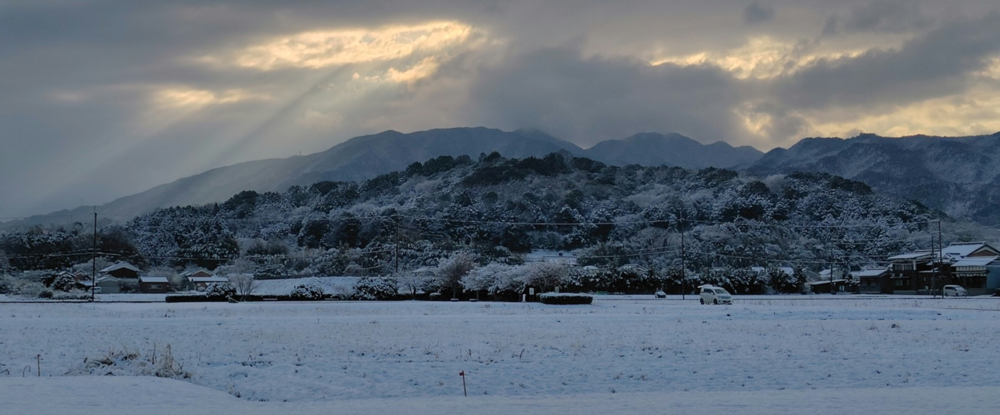
積雪が少ない地域のため、滅多に見られない、藤原京から見た雪化粧の天香具山。
雲の隙間から差し込む光（天使の梯子）が、天孫降臨を思わせる。
初版第1刷ではなく、将来 発行予定の、第2刷の内容になっています。
画像をクリックすると、HTMLで表示します。
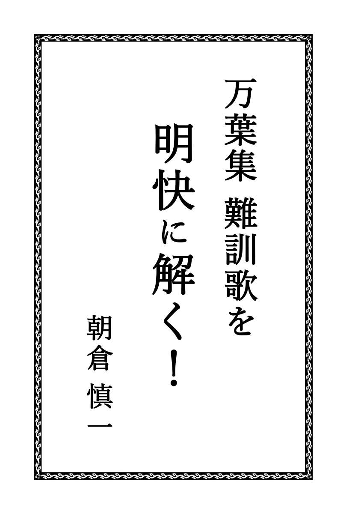
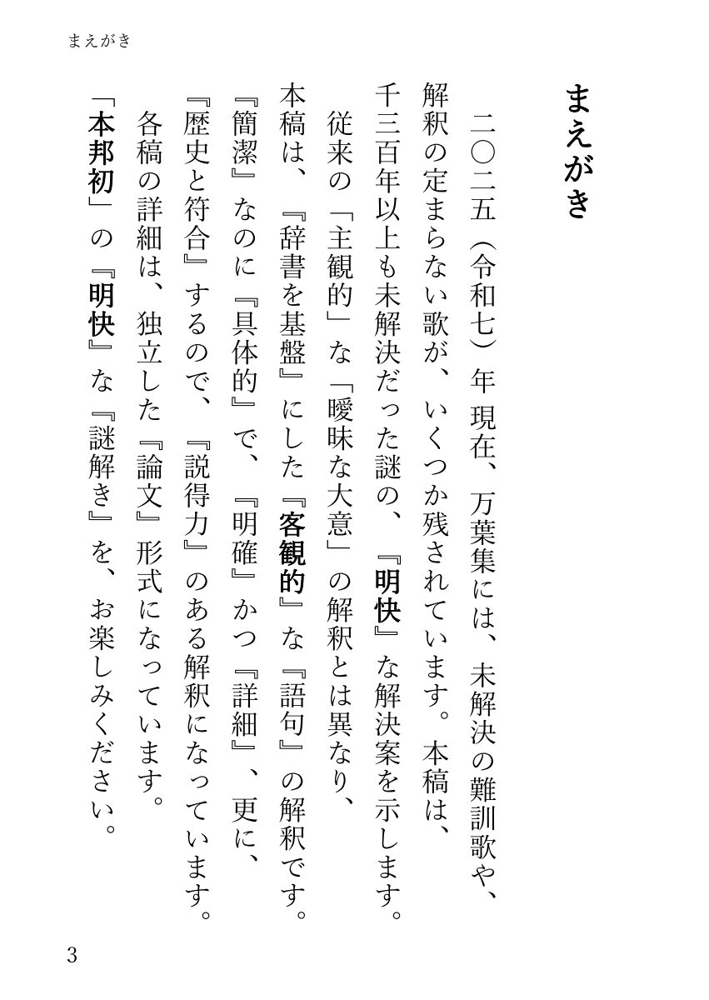
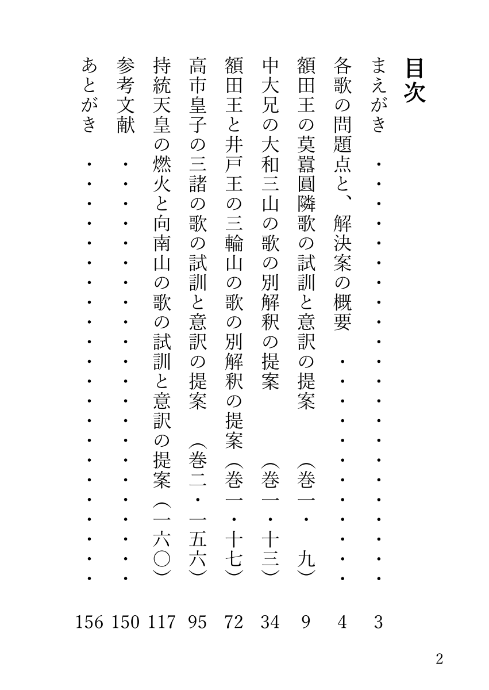
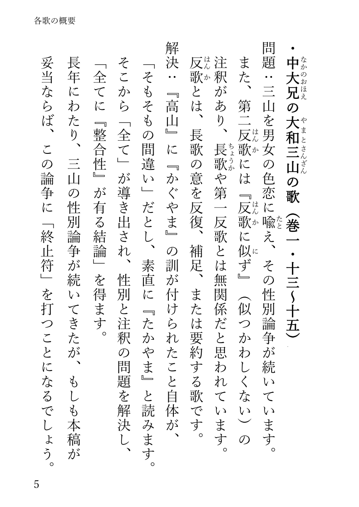
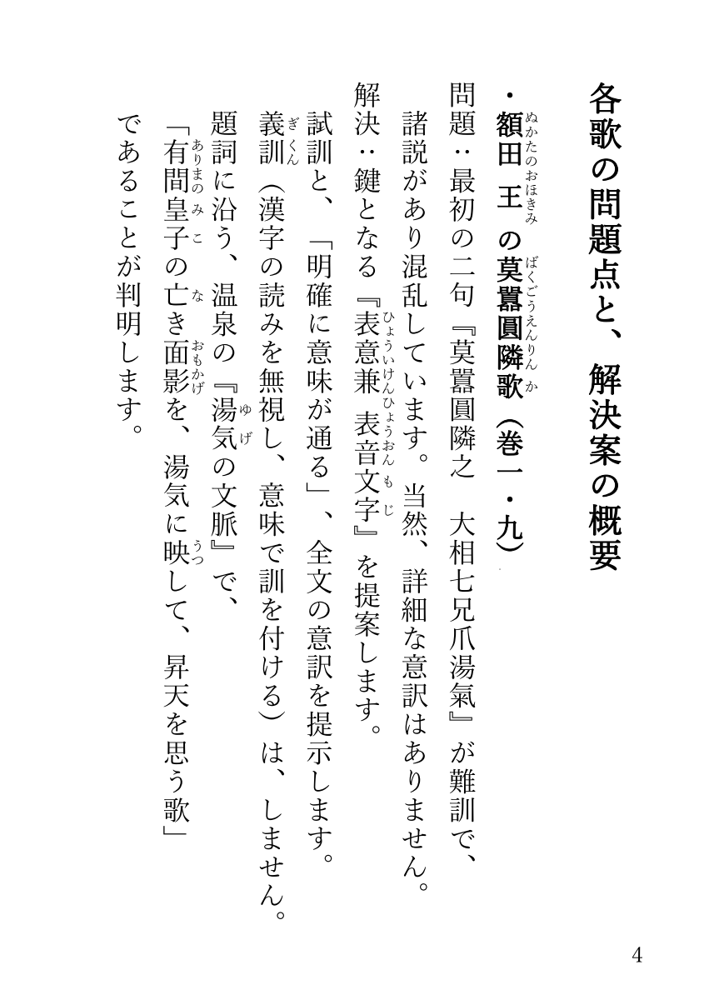
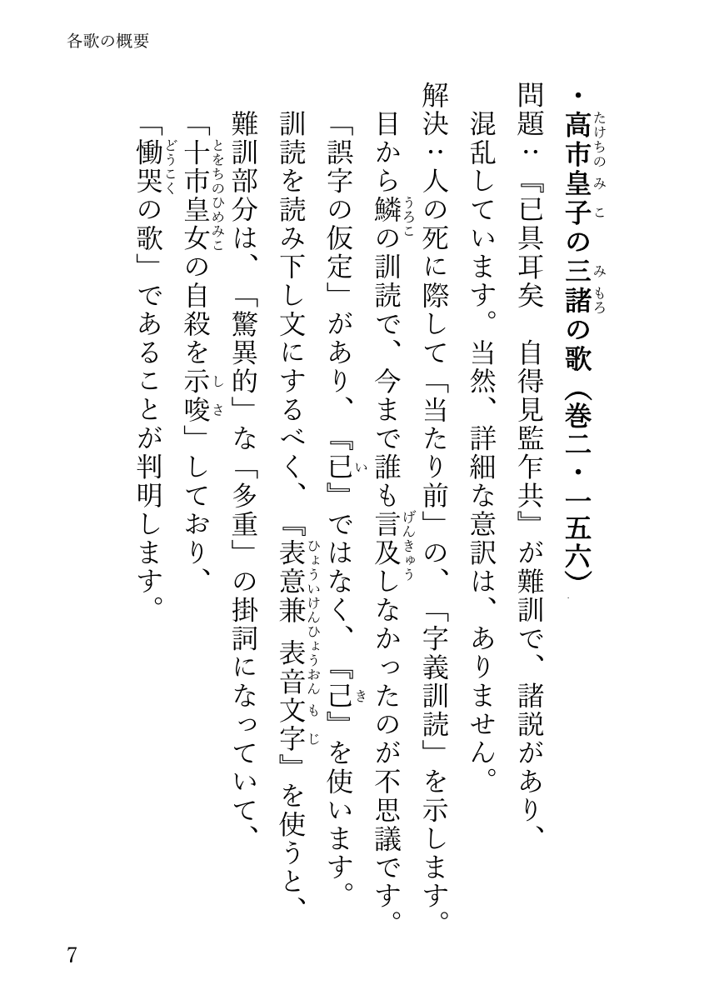
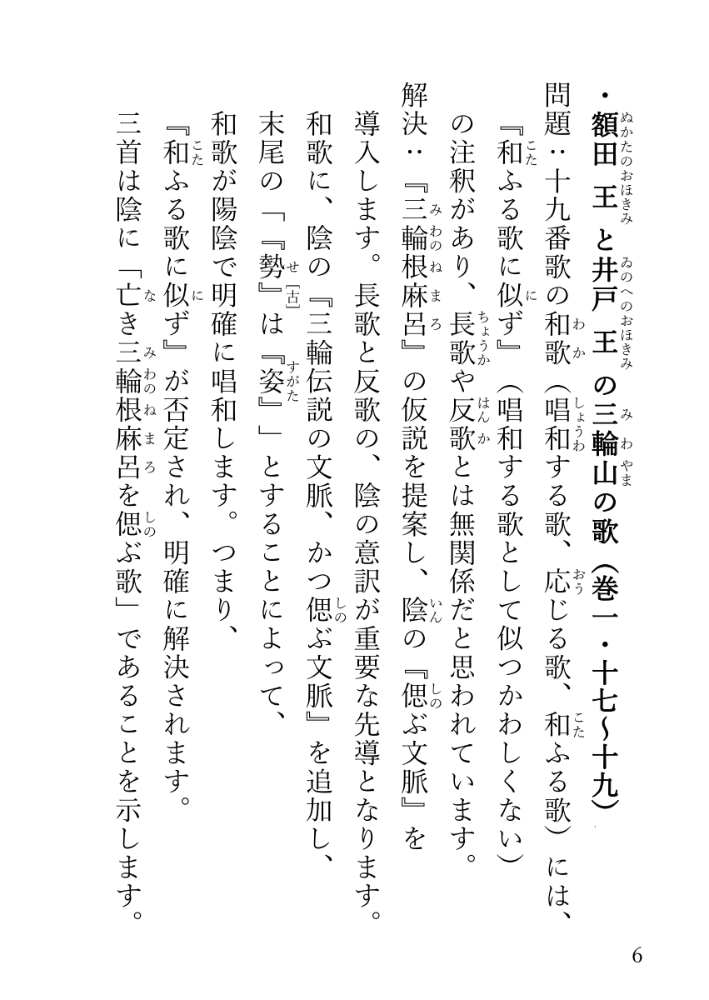
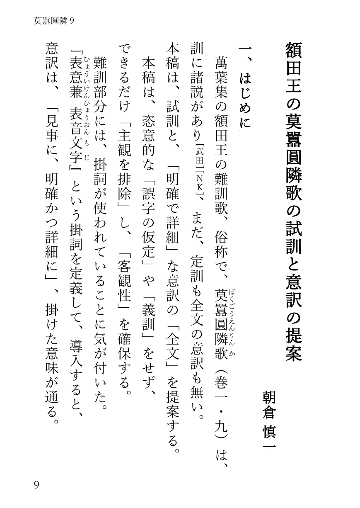
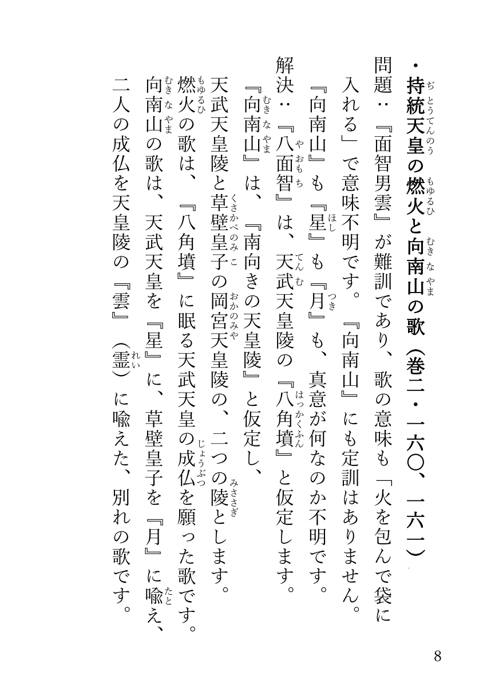
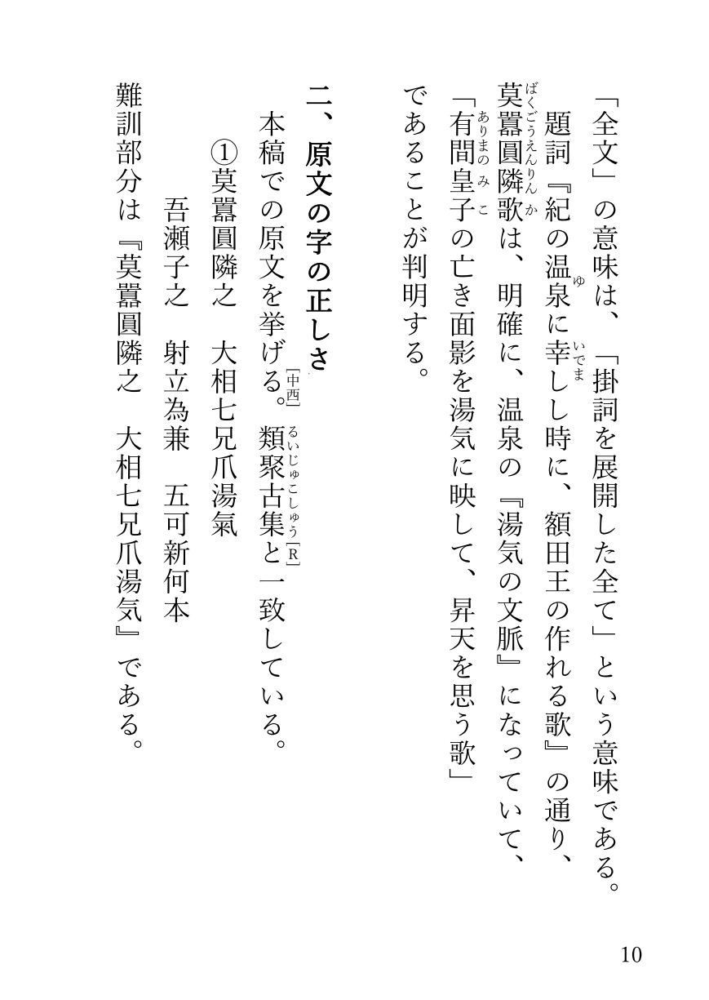
・正誤表(初版第1刷).HTML
・正誤表(初版第1刷).PDF
・正誤表(初版第1刷)書籍貼付け用.PDF
・アマゾン （ 商品ページ へ ）
・紀伊國屋書店 （ 商品ページ へ ）
・丸善ジュンク堂書店（ 商品ページ へ ）
・ｅ－ｈｏｎ （ 商品ページ へ ）
・ヨドバシ （ 商品ページ へ ）
・セブンネット （ 商品ページ へ ）
・HMV＆BOOKS （ 商品ページ へ ）
・楽天市場 （ 商品ページ へ ）
・ｄショッピング（ 商品ページ へ ）
・実店舗でも販売されています。